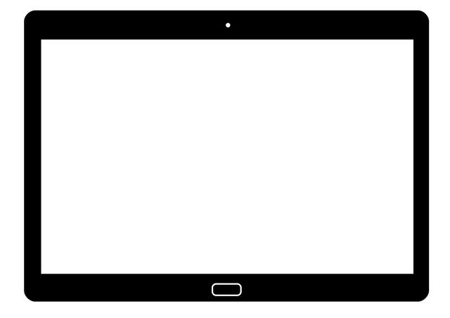
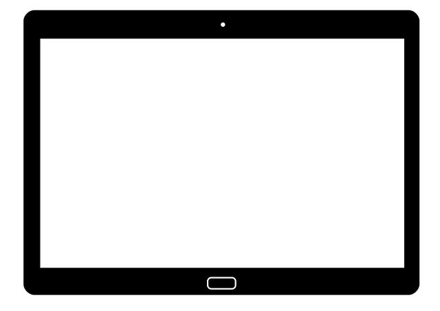

Funcionalidad
Se programa sobre HTML o HTML5, lo que permite añadir etiquetas del tipo meta name="viewport" content="width=device-width, initial-scale=1.0" (agregar <>) y colocarlas sobre los encabezados y otros títulos. De esta forma, se logra que el aspecto se ajuste automáticamente al tamaño de las pantallas de cada dispositivo.

Luego se aplican las modificaciones correspondientes en las hojas de estilo de CSS o CSS3 y, cuando un usuario navegue, por ejemplo, en su smartphone se cargarán automáticamente las reglas correspondientes al tamaño reducido de la pantalla, garantizando una óptima visualización y navegación.
Ventajas del diseño responsive
Reducción de costes y esfuerzos. Lógicamente, el tener que programar una única web reduce enormemente las horas de trabajo, mantenimiento y costes económicos.
Únicamente hay una URL o dominio. De esta forma se evitan duplicados en los resultados de búsqueda y en los contenidos, lo cual, a parte de ser molesto para el usuario, está penalizado por Google.
Es el método más práctico y cómodo. No cabe duda que la existencia de una única web hace mucho más fácil, práctico y cómodo el trabajo del administrador o webmaster, puesto que sólo debe ocuparse de crear y actualizar una única web. Y lo mismo ocurre con el usuario, que puede visitar exactamente el mismo sitio, con independencia de su medio de conexión.
La mejor opción desde el punto de vista SEO. Permite mantener los links, la audiencia y el posicionamiento de la web original. Además, es la opción recomendada y mejor valorada, y también premiada, por Google, lo que significa ganar puestos en el ránking de búsquedas.


 
